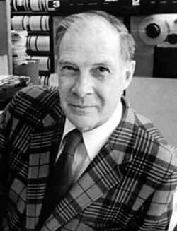
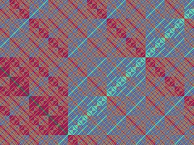

Richard Hamming | |
|---|---|
 | |
| Born | Richard Wesley Hamming February 11, 1915 Chicago, Illinois, U.S. |
| Died | January 7, 1998 (aged 82) Monterey, California, U.S. |
| Education | University of Chicago (BS) University of Nebraska (MA) University of Illinois, Urbana-Champaign (PhD) |
| Known for | |
| Awards | Turing Award (1968) IEEE Emanuel R. Piore Award (1979) Harold Pender Award (1981) IEEE Hamming Medal (1988) |
| Scientific career | |
| Fields | Mathematics |
| Institutions |
|
| Thesis | Some Problems in the Boundary Value Theory of Linear Differential Equations (1942) |
| Waldemar Trjitzinsky | |
Richard Wesley Hamming (February 11, 1915 – January 7, 1998) was an American mathematician whose work had many implications for computer engineering and telecommunications. His contributions include the Hamming code (which makes use of a Hamming matrix), the Hamming window, Hamming numbers, the sphere-packing or Hamming bound, Hamming graph concepts, and the Hamming distance.
Born in Chicago, Hamming attended the University of Chicago, the University of Nebraska and the University of Illinois at Urbana–Champaign, where he wrote his doctoral thesis in mathematics under the supervision of Waldemar Trjitzinsky (1901–1973). In April 1945, he joined the Manhattan Project at the Los Alamos Laboratory, where he programmed the IBM calculating machines that computed the solution to equations provided by the project's physicists. He left to join the Bell Telephone Laboratories in 1946. Over the next fifteen years, he was involved in nearly all of the laboratories' most prominent achievements. For his work, he received the ACM Turing Award in 1968, being its third recipient.[1]
After retiring from Bell Labs in 1976, Hamming took a position at the Naval Postgraduate School in Monterey, California, where he worked as an adjunct professor and senior lecturer in computer science, and devoted himself to teaching and writing books. He delivered his last lecture in December 1997, just a few weeks before he died from a heart attack on January 7, 1998.
Hamming was born in Chicago, Illinois, on February 11, 1915,[2] the son of Richard J. Hamming, a credit manager, and Mabel G. Redfield.[3] His father was Dutch, and his mother was a Mayflower descendant.[4] He grew up in Chicago, where he attended Crane Technical High School and Crane Junior College.[3]
Hamming initially wanted to study engineering, but money was scarce during the Great Depression, and the only scholarship offer he received came from the University of Chicago, which had no engineering school. Instead, he became a science student, majoring in mathematics,[5] and received his Bachelor of Science degree in 1937.[2] He later considered this a fortunate turn of events. "As an engineer," he said, "I would have been the guy going down manholes instead of having the excitement of frontier research work."[2]
He went on to earn a Master of Arts degree from the University of Nebraska in 1939, and then entered the University of Illinois at Urbana–Champaign, where he wrote his doctoral thesis on Some Problems in the Boundary Value Theory of Linear Differential Equations under the supervision of Waldemar Trjitzinsky.[5] His thesis was an extension of Trjitzinsky's work in that area. He looked at Green's function and further developed Jacob Tamarkin's methods for obtaining characteristic solutions.[6] While he was a graduate student, he discovered and read George Boole's The Laws of Thought.[7]
The University of Illinois at Urbana–Champaign awarded Hamming his Doctor of Philosophy in 1942, and he became an instructor in mathematics there. He married Wanda Little, a fellow student, on September 5, 1942,[5] immediately after she was awarded her own Master of Arts in English literature. They would remain married until his death, and had no children.[3] In 1944, he became an assistant professor at the J.B. Speed Scientific School at the University of Louisville in Louisville, Kentucky.[5]
With World War II still ongoing, Hamming left Louisville in April 1945 to work on the Manhattan Project at the Los Alamos Laboratory, in Hans Bethe's division, programming the IBM calculating machines that computed the solution to equations provided by the project's physicists. His wife Wanda soon followed, taking a job at Los Alamos as a human computer, working for Bethe and Edward Teller.[5] Hamming later recalled that:
Shortly before the first field test (you realize that no small scale experiment can be done—either you have a critical mass or you do not), a man asked me to check some arithmetic he had done, and I agreed, thinking to fob it off on some subordinate. When I asked what it was, he said, "It is the probability that the test bomb will ignite the whole atmosphere." I decided I would check it myself! The next day when he came for the answers I remarked to him, "The arithmetic was apparently correct but I do not know about the formulas for the capture cross sections for oxygen and nitrogen—after all, there could be no experiments at the needed energy levels." He replied, like a physicist talking to a mathematician, that he wanted me to check the arithmetic not the physics, and left. I said to myself, "What have you done, Hamming, you are involved in risking all of life that is known in the Universe, and you do not know much of an essential part?" I was pacing up and down the corridor when a friend asked me what was bothering me. I told him. His reply was, "Never mind, Hamming, no one will ever blame you."[7]
Hamming remained at Los Alamos until 1946, when he accepted a post at the Bell Telephone Laboratories (BTL). For the trip to New Jersey, he bought Klaus Fuchs's old car. When he later sold it just weeks before Fuchs was unmasked as a spy, the FBI regarded the timing as suspicious enough to interrogate Hamming.[3] Although Hamming described his role at Los Alamos as being that of a "computer janitor",[8] he saw computer simulations of experiments that would have been impossible to perform in a laboratory. "And when I had time to think about it," he later recalled, "I realized that it meant that science was going to be changed".[2]

At the Bell Labs Hamming shared an office for a time with Claude Shannon. The Mathematical Research Department also included John Tukey and Los Alamos veterans Donald Ling and Brockway McMillan. Shannon, Ling, McMillan and Hamming came to call themselves the Young Turks.[5] "We were first-class troublemakers," Hamming later recalled. "We did unconventional things in unconventional ways and still got valuable results. Thus management had to tolerate us and let us alone a lot of the time."[2]
Although Hamming had been hired to work on elasticity theory, he still spent much of his time with the calculating machines.[8] Before he went home on one Friday in 1947, he set the machines to perform a long and complex series of calculations over the weekend, only to find when he arrived on Monday morning that an error had occurred early in the process and the calculation had errored off.[9] Digital machines manipulated information as sequences of zeroes and ones, units of information that Tukey would christen "bits".[10] If a single bit in a sequence was wrong, then the whole sequence would be. To detect this, a parity bit was used to verify the correctness of each sequence. "If the computer can tell when an error has occurred," Hamming reasoned, "surely there is a way of telling where the error is so that the computer can correct the error itself."[9]
Hamming set himself the task of solving this problem,[3] which he realised would have an enormous range of applications. Each bit can only be a zero or a one, so if you know which bit is wrong, then it can be corrected. In a landmark paper published in 1950, he introduced a concept of the number of positions in which two code words differ, and therefore how many changes are required to transform one code word into another, which is today known as the Hamming distance.[11] Hamming thereby created a family of mathematical error-correcting codes, which are called Hamming codes. This not only solved an important problem in telecommunications and computer science, it opened up a whole new field of study.[11][12]
The Hamming bound, also known as the sphere-packing or volume bound is a limit on the parameters of an arbitrary block code. It is from an interpretation in terms of sphere packing in the Hamming distance into the space of all possible words. It gives an important limitation on the efficiency with which any error-correcting code can utilize the space in which its code words are embedded. A code which attains the Hamming bound is said to be a perfect code. Hamming codes are perfect codes.[13][14]
Returning to differential equations, Hamming studied means of numerically integrating them. A popular approach at the time was Milne's Method, attributed to Arthur Milne.[15] This had the drawback of being unstable, so that under certain conditions the result could be swamped by roundoff noise. Hamming developed an improved version, the Hamming predictor-corrector. This was in use for many years, but has since been superseded by the Adams method.[16] He did extensive research into digital filters, devising a new filter, the Hamming window, and eventually writing an entire book on the subject, Digital Filters (1977).[17]
During the 1950s, he programmed one of the earliest computers, the IBM 650, and with Ruth A. Weiss developed the L2 programming language, one of the earliest computer languages, in 1956. It was widely used within the Bell Labs, and also by external users, who knew it as Bell 2. It was superseded by Fortran when the Bell Labs' IBM 650 were replaced by the IBM 704 in 1957.[18]
In A Discipline of Programming (1976), Edsger Dijkstra attributed to Hamming the problem of efficiently finding regular numbers.[19] The problem became known as "Hamming's problem"; in computer science, regular numbers are often referred to as "Hamming numbers", although he did not discover them.[20]
Throughout his time at Bell Labs, Hamming avoided management responsibilities. He was promoted to management positions several times, but always managed to make these only temporary. "I knew in a sense that by avoiding management," he later recalled, "I was not doing my duty by the organization. That is one of my biggest failures."[2]
Hamming served as president of the Association for Computing Machinery from 1958 to 1960.[8] In 1960, he predicted that one day half of the Bell Labs budget would be spent on computing. None of his colleagues thought that it would ever be so high, but his forecast actually proved to be too low.[21] His philosophy on scientific computing appeared as the motto of his Numerical Methods for Scientists and Engineers (1962):
The purpose of computing is insight, not numbers.[22]
In later life, Hamming became interested in teaching. Between 1960 and 1976, when he left Bell Labs, he held visiting or adjunct professorships at Stanford University, Stevens Institute of Technology, the City College of New York, the University of California at Irvine and Princeton University.[23] As a Young Turk, Hamming had resented older scientists who had used up space and resources that would have been put to much better use by the young Turks. Looking at a commemorative poster of the Bell Labs' valued achievements, he noted that he had worked on or been associated with nearly all of those listed in the first half of his career at Bell Labs, but none in the second. He therefore resolved to retire in 1976, after thirty years.[2]
In 1976 he moved to the Naval Postgraduate School in Monterey, California, where he worked as an adjunct professor and senior lecturer in computer science.[3] He gave up research, and concentrated on teaching and writing books.[5] He noted that:
The way mathematics is currently taught it is exceedingly dull. In the calculus book we are currently using on my campus, I found no single problem whose answer I felt the student would care about! The problems in the text have the dignity of solving a crossword puzzle – hard to be sure, but the result is of no significance in life.[5]
Hamming attempted to rectify the situation with a new text, Methods of Mathematics Applied to Calculus, Probability, and Statistics (1985).[5] In 1993, he remarked that "when I left BTL, I knew that that was the end of my scientific career. When I retire from here, in another sense, it's really the end."[2] And so it proved. He became Professor Emeritus in June 1997,[24] and delivered his last lecture in December 1997, just a few weeks before his death from a heart attack on January 7, 1998.[8] He was survived by his wife Wanda.[24]
Hamming's final recorded lecture series[25] is maintained by Naval Postgraduate School along with ongoing work[26] that preserves his insights and extends his legacy.
The IEEE Richard W. Hamming Medal, named after him, is an award given annually by the Institute of Electrical and Electronics Engineers (IEEE), for "exceptional contributions to information sciences, systems and technology", and he was the first recipient of this medal.[34] The reverse side of the medal depicts a Hamming parity check matrix for a Hamming error-correcting code.[8]
{{cite web}}: CS1 maint: deprecated archival service (link)
{kind=link}
{kind=link}